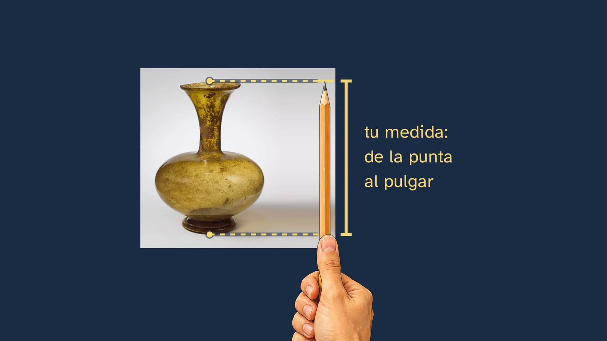
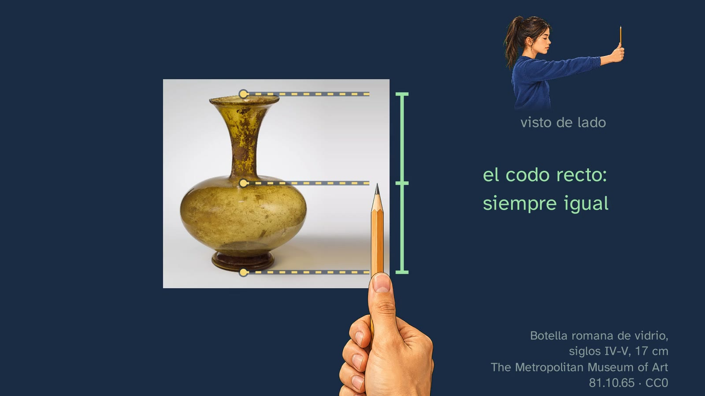
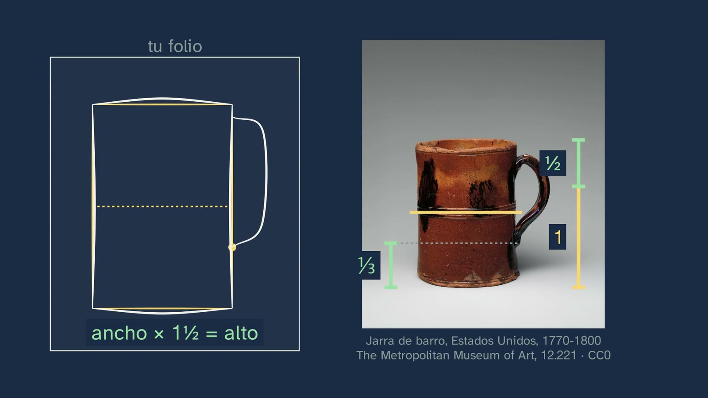

Medir con el lápiz
En pocas palabras
Es el primer taller de Dibujo Artístico del canal, con Marina de bata en el aula de dibujo. La clase 1 terminó con una idea: no dibujamos lo que vemos, sino lo que sabemos de las cosas. Ésta da la herramienta para dibujar lo que se ve: medir con el lápiz con el brazo estirado. Su mensaje cabe en una línea: el lápiz no mide centímetros, mide proporciones.
Abre con las soluciones de la clase 1 y con un gancho de hace más de quinientos años. Leonardo da Vinci dejó escrito, en las notas que después se reunieron en el Tratado de la pintura (§87), cómo copiar un paisaje a través de un cristal: el ojo, a dos tercios de brazo del cristal; la cabeza, sujeta con un instrumento; un ojo, cerrado o tapado. La clase lo lee en la página de la edición de Roma de 1890 y lo dibuja. ¿Por qué un ojo, y por qué tan quieto?
La respuesta se construye desde los ojos del alumno. Primero, de lado: la luz va de cada punto de la botella al ojo y, donde cruza el cristal, se marca un punto. Después la cámara viaja hasta el ojo y el dibujo del cristal cae justo encima de la botella real: lo que marcas en el cristal es lo que ves. Una tira de ese cristal, de pie junto a la botella, se convierte en el lápiz: la marca de arriba es la punta, y la de abajo, la uña del pulgar. Se mide el trozo de la punta al pulgar, no el lápiz entero. La mano, el lápiz y una alumna de perfil están ilustrados, para que el gesto se reconozca a la primera.
El alumno predice y mide en una botella romana de vidrio del Met: ¿la boca y el cuello son más cortos que el cuerpo? No: caben justo una vez, y el hombro de la botella está en la mitad. Al acercarse, la medida crece y la proporción no cambia. Con eso se contesta a Leonardo, comprobándolo: si se dobla el codo entre una medida y otra, el lápiz se ve más grande y la medida ya no casa (el pulgar se pasa del pie); y al cambiar de ojo, el lápiz salta.
La segunda mitad es de taller. La botella, encajada paso a paso de lo que se ve a un folio, que tiene su propio tamaño: las dos rayas, la mitad, el ancho (con el lápiz tumbado, que cabe una vez y casi media en el alto), el eje con el lápiz colgando como una plomada, lo demás comparado y, al final, la línea, que dibuja una mano. El encaje se comprueba poniendo el dibujo encima de la foto: el medido casi no se aparta; uno hecho a ojo (inventado para el ejemplo, y se dice) se aparta bastante. Con honradez: no hay estudios que hayan medido cuánto mejora un dibujo al medir. Las líneas inclinadas se copian leyendo el lápiz como la aguja de un reloj, en una silla shaker del Met. La jarra la encaja el alumno, en su folio, con el vídeo en pausa, y la comprueba con una medida. Cierran los errores de quien empieza, con la alumna que inclina el lápiz hacia la cara, y Van Gogh, que aprendió a dibujar casi solo, con libros: su camino de Etten (1881), su frase a Theo sobre la práctica («no se puede comprar con los libros; si se pudiera, quizá se venderían más»), tres ejercicios y una pregunta abierta, con la pista de su calle de Saintes-Maries (1888), vista tan de cerca que asoma el lápiz bajo la tinta.
Objetivo. Al terminar, el alumnado sabrá medir con el lápiz lo que ve (brazo estirado, un ojo, de la punta al pulgar) y encajar del natural cualquier objeto en su folio: la mitad, el ancho, el eje con la plomada y las inclinadas copiadas, comprobándolo encima del modelo; y por qué funciona.
Currículo
Real Decreto 243/2022, anexo II, Dibujo Artístico, materia obligatoria de 1.º de Bachillerato en la vía de Artes Plásticas, Imagen y Diseño. Citas comprobadas en el texto consolidado del BOE (última actualización, del 02/07/2026, que no toca el anexo II) y, para las páginas, en el original (BOE n.º 82, de 6 de abril de 2022).
| Elemento | Qué dice el decreto | Dónde se trabaja |
|---|---|---|
| Saber básico (bloque B, «La expresión gráfica y sus recursos elementales») | «El boceto o esbozo. Introducción al encaje.» (p. 46128) | Toda la clase: el método de medir y el encaje de la botella (6:28–8:50) y de la jarra (9:17–10:13) |
| Saber básico (bloque A, «Concepto e historia del dibujo») | «El dibujo como proceso interactivo de observación, reflexión, imaginación, representación y comunicación.» (p. 46127) | Medir es observar con método: el cristal de Leonardo, el ojo y la tira de cristal que se hace lápiz, y la comprobación encima de la foto (1:50–6:19 y 8:14) |
| Competencia específica 8, descripción | «A través del encuadre y el encaje se organiza esa información en el soporte elegido y se establecen proporciones…» (p. 46125) | Decidir el tamaño en el papel (el encuadre) y pasar proporciones, no centímetros (el encaje) |
| Introducción de la materia | El dibujo como «un método de trabajo casi científico de exploración e indagación» (p. 46121) | La clase pone a prueba cada regla: predecir y medir la mitad, acercarse, el codo, el lápiz que salta, el dibujo encima de la foto |
| Criterio 8.1 | «Representar gráficamente el modelo elegido, seleccionando y abstrayendo sus características más representativas, a partir del estudio y análisis del mismo.» (p. 46127) | El encaje: de lo grande a lo pequeño, y lo pequeño, a ojo |
| Criterio 8.2 | «Utilizar el encuadre, el encaje y la perspectiva en la resolución de problemas de representación gráfica, analizando tanto los diferentes volúmenes como el espacio que completa el conjunto.» (p. 46127) | El encaje de la botella y de la jarra, y la silla del ejercicio 2 |
Lo que hay que traer. De la ESO (Real Decreto 217/2022, Educación Plástica, Visual y Audiovisual), «La composición. Conceptos de equilibrio, proporción y ritmo…». De Matemáticas de la ESO, la semejanza y el teorema de Tales: la clase no los nombra, pero son la geometría de lo que enseña (ver «Notas»). De la clase 1, que dibujamos lo que sabemos y no lo que vemos (0:18).
Las horas. En las siete comunidades contrastadas son cuatro horas semanales en 1.º (en el País Vasco, tres de mínimo y cuatro de referencia). El vídeo da el método y su porqué; el aula se queda para encajar del natural.
Cómo está construida la clase
Capítulos del vídeo
Unos doce minutos y medio, en trece capítulos. Es una clase de taller: el alumno mide la botella, encaja una jarra en su folio y, si quiere, dibuja la botella a la vez que la pizarra. Sigue el modelo del departamento: mirar, medir y dibujar, con un ejemplo entero (la botella), uno a medias (la jarra) y uno solo (la silla del ejercicio 2). El gesto se enseña siempre desde los ojos del alumno, con una mano y un lápiz ilustrados sobre la foto real, y la voz va más despacio sólo en los pasos de detalle.
| Capítulo | Qué pasa | Por qué así |
|---|---|---|
| Qué vamos a ver | Marina presenta el primer taller. El mapa del tema y lo que hace falta: un lápiz, un folio y una botella o una taza (0:05). | El mapa, en todas las clases. |
| Lo que ya sabes | ¿Dónde ponemos los ojos de memoria? ¿Sabes por qué? (0:18, pausa). Demasiado arriba; la hipótesis que mejor encaja: dibujamos la cabeza que creemos (0:34). | Recuperar la clase 1 y su idea, que es el porqué de medir. |
| Las soluciones | Los tres ejercicios de la clase 1, cada uno con su enunciado: el plato, el calco y la copia, la segunda cara (0:49). | ADR-112: las soluciones abren la clase siguiente. |
| El consejo de Leonardo | El §87 del Tratado de la pintura, leído en la página de 1890 y dibujado a la vez: el cristal, los dos tercios de brazo, la cabeza sujeta, el ojo cerrado (1:50). «¿Por qué un ojo cerrado y la cabeza quieta?» (2:26). | El gancho con su contexto. |
| Del cristal al lápiz | De lado, la luz de la botella al ojo y los puntos en el cristal (2:34). La cámara viaja hasta el ojo: el dibujo tapa la botella (2:50). La tira del cristal se hace lápiz: la punta y la uña del pulgar; tu medida, de la punta al pulgar (3:05). | La intuición antes que la regla, y la respuesta a «¿el lápiz entero o una parte?». |
| Así te pones | La alumna de perfil: el brazo estirado del todo, el lápiz de pie y un ojo cerrado, numerados en la figura y en la lista (3:35). | El gesto, visto de fuera antes de hacerlo. |
| Mídelo tú | ¿La boca y el cuello son más cortos que el cuerpo? (3:55, pausa). La medida, paso a paso, desde tus ojos: la punta en la boca, el pulgar en el hombro de la botella, el lápiz que baja sin mover el pulgar; miden lo mismo (4:10). Te acercas: la medida crece y la proporción no; el lápiz mide proporciones (4:46). | Predecir, medir y entender por qué se miden proporciones. |
| Quieto, y un ojo | Si doblas el codo al bajar el lápiz, ¿te sirve la misma medida? (5:11, pausa). No: el lápiz se ve más grande y el pulgar se pasa del pie (5:26). Con un ojo y con el otro, el lápiz salta (5:48). Marina, a mitad (6:19). | La respuesta a Leonardo, comprobada por el propio alumno. |
| Encajar una botella | El folio a la izquierda y lo que ves a la derecha. Siete pasos: el sitio, el tamaño, la mitad, el ancho con el lápiz tumbado, el eje con la plomada, lo demás y la línea, que dibuja una mano (6:28–8:14). El dibujo encima de la foto: el medido y uno a ojo, inventado (8:14). Lo que no sabemos y lo que sí (8:34). | El ejemplo entero, despacio; la comprobación a la vista, que no hace ningún referente. |
| Las inclinadas | No se miden: se copian. El lápiz, a lo largo del travesaño de la silla, leído como la aguja de un reloj: las dos; en el folio, la misma hora (8:50). | Una sola herramienta nueva. |
| Tu turno: una jarra | El ejemplo a medias: los cuatro pasos y el vídeo en pausa (9:17); la solución sobre la jarra y en el folio, y la comprobación, «ancho × 1½ = alto» (9:52). | Dibujar, no sólo mirar, y comprobarse con una medida (artículo 15). |
| Los errores típicos | Pasar centímetros al papel (10:13). El codo, la cabeza y el ojo; el lápiz inclinado hacia ti, que coge más botella; lo muy pequeño, a ojo (10:34). | El error a la vista, con la misma alumna que ya conocen. |
| Para practicar | Van Gogh, que aprendió casi solo, con libros, y su frase de 1881: la práctica «no se puede comprar con los libros» (11:00). Tres ejercicios, cada uno con su imagen grande. La pregunta abierta, con la pista de dos dibujos suyos, de 1881 y de 1888, y el lápiz bajo la tinta (12:02). La próxima clase (12:33). Marina se despide (12:41). | Práctica con un objeto propio, con la silla entera y con un error que hay que encontrar. Un maestro que empezó como ellos, y su obra como pista. |
Puentes con otras materias. Matemáticas: semejanza de triángulos y Tales; las proporciones. Física y Química: la luz en línea recta. Biología: la visión con dos ojos (cada ojo ve desde su sitio). Historia: Leonardo, el Renacimiento que convierte la pintura en un problema de geometría.

Plan de una sesión de 50 minutos
Pensado para verlo en clase con proyector, con folios, lápiz y una botella o una taza por pareja. Si el vídeo se ve en casa, la sesión puede dedicarse a la actividad.
| Minutos | Qué se hace |
|---|---|
| 0–3 | Sin vídeo. Cada cual escribe, sin medir, cuántas veces cree que cabe el ancho de la botella de su mesa en su alto. |
| 3–9 | Vídeo hasta «Así te pones» (0:00–3:55). Todo el grupo se pone como la alumna, con el lápiz de pie y el brazo estirado. |
| 9–16 | Vídeo hasta la toma de Marina a mitad (3:55–6:28). Parar en (4:10): todo el grupo mide la botella del proyector desde su sitio. Las lecturas son muy distintas según la fila, y la mitad cae igual para todos. Parar en (5:48): el lápiz que salta, contra el borde de la pizarra. |
| 16–23 | Vídeo hasta el final (6:28–12:51). Parar en (9:17): la jarra, en el folio, unos tres minutos. |
| 23–47 | La actividad: «Una botella, medida y comprobada». |
| 47–50 | Cada cual mide ahora la botella de su mesa y lo compara con lo que escribió al principio. La pregunta abierta, para el comentario del vídeo o para la clase siguiente. |
Errores típicos y cómo se tratan
Con la advertencia de siempre: ninguno está medido con alumnado español de Bachillerato. Son los que describen los manuales desde 1886 (Cassagne) y 1913 (Speed), y sus cifras son cálculos del canal, ejecutados (calculos.py de la clase).
- Pasar al papel los centímetros del lápiz. El dibujo sale del tamaño de la lectura (a menudo, diminuto), no del que se decidió. Del lápiz al papel pasan las proporciones; el tamaño lo fijan las dos rayas del principio (10:13).
- Doblar el codo entre una medida y otra. Con el lápiz a 50 cm en vez de 60, se ve 1,2 veces más grande: la medida del cuello, llevada al cuerpo, se pasa del pie un 20 %, y el cuerpo saldría más corto de lo que es (5:26). Con una figura, de 7,5 cabezas se pasa a 6,9 con sólo 5 cm. Lo que importa no es el brazo, sino que la distancia del ojo al lápiz no cambie: el brazo estirado del todo es la postura que se repite sola. Cassagne lo exigía con su hombre, que mide cerca de la cara: «maintenir le crayon à la même distance de l'œil» (p. 35).
- Mover la cabeza o inclinarse. Desplazar el ojo 1 cm mueve el punto unos 8 mm en el plano del lápiz (con el modelo a 3 m): en una lectura de 10 cm, un 8 %.
- Cambiar de ojo. Con los ojos a unos 6 cm, el lápiz salta unos 4 cm delante de una botella a 95 cm, y 24 cm contra un fondo a 3 m (5:48). Se elige un ojo al empezar y se usa siempre ése.
- Inclinar el lápiz hacia uno. Lo medido se alarga 1/cos: +1,5 % a 10°, +6,4 % a 20° y +15,5 % a 30° (10:34). En el vídeo, la alumna inclina el lápiz hacia la cara y los mismos rayos lo cortan en un trozo más largo. El lápiz va plano, como pegado a un cristal paralelo al papel. Se comprueba mirándolo de lado, en un espejo o con un compañero.
- Medir lo muy pequeño. Si el pulgar se coloca con ±2 mm, el error es del 2 % sobre 10 cm y del 20 % sobre 1 cm (10:34). Lo pequeño, a ojo, dentro de lo ya medido (Speed: «best judged by eye»).
- Medir en oblicuo. Speed lo desaconseja: «It is never advisable to compare other than vertical and horizontal measurements» (pp. 88–89). Las inclinadas se copian, por su hora (8:50).
- Olvidar la unidad o cambiarla a mitad. Las proporciones dejan de casar. Se apunta en una esquina («unidad = la botella entera»).
- Creer que medir es exacto. No lo es, y la clase no lo dice: es una muleta para entrenar el ojo. Speed: «These measurements are never to be taken as absolutely accurate, but are a great help to beginners in training the eye» (pp. 88–89). Por eso la pregunta abierta no parte de que «midiendo sale exacto».

Preguntas y soluciones
Para y piensa (dentro del vídeo)
- De memoria, ¿dónde solemos poner los ojos de una cabeza? ¿Sabes por qué? (0:18). Demasiado arriba: de media, al 57 % de la altura de la cabeza, cuando en una cabeza adulta están al 47,7 % (Carbon y Wirth, 2014). La explicación que mejor encaja es que dibujamos la cabeza que creemos, como una caja sin frente; es una hipótesis.
- La boca y el cuello, ¿son más cortos que el cuerpo? (3:55). No: miden lo mismo. La medida de la boca al hombro de la botella, donde el cuello se abre, cabe justo una vez del hombro al pie: el hombro está en la mitad del alto (medida en la foto del Met: la mitad cae un 3,4 % del alto por debajo de donde el cuello empieza a abrirse, en la curva del hombro). A ojo parece que el cuerpo es mucho más grande, porque es más ancho: el ancho engaña al alto.
- Si doblas un poco el codo al bajar el lápiz, ¿te sirve la misma medida? (5:11). No: el lápiz se acerca al ojo y se ve más grande (de 60 a 50 cm, 1,2 veces), así que el pulgar se pasa del pie y el cuerpo saldría más corto de lo que es.
- ¿Qué hace el lápiz si cambias de ojo? (5:48, sin pausa). Salta de lado, porque cada ojo lo ve desde su sitio, a unos 6 cm del otro: delante de la botella, a 95 cm, unos 4 cm. Contra algo lejano (una puerta a 3 m) se nota mucho más.
La jarra, a medias (9:17). El ancho del cuerpo, sin el asa, cabe una vez y media en el alto (1,46 en la foto; la ficha del Met da 14 cm de alto por 9,5 de diámetro, 1,47). La mitad cae en la raya del barro. El asa se agarra por abajo a un tercio del alto, contando desde el pie (0,30). La comprobación: en el dibujo, el ancho tiene que caber una vez y media en el alto. Si alguien mide el ancho con el asa, le sale 1,09: el error está en la unidad, no en el lápiz.
Para practicar (las soluciones, al principio de la clase 3)
- Encaja una botella o una taza de tu mesa, midiendo, y apunta con qué parte mediste, y dónde cae la mitad. Cada cual tiene la suya. Lo que se corrige es el método: la medida de partida apuntada (la unidad), la mitad buscada primero, las rayas del tamaño antes de nada y la comprobación final con el lápiz (por ejemplo, «el ancho cabe 2,5 veces en el alto, en el modelo y en el dibujo»).
- La silla del Met (66.10.5): dibújala entera, midiendo, o sólo su encaje. Empieza por cuántas veces cabe su ancho, de la pata de la izquierda a la de la derecha, en su alto. Su ancho cabe una vez y dos tercios en su alto (1,67, medido en la foto con una máscara de color: de lo alto del respaldo al pie más bajo, 1515 píxeles; de pata a pata, 905). La plomada desde lo alto del poste derecho del respaldo cae justo sobre su pata, y el travesaño de abajo de la derecha sube hacia las dos.
- En el encaje de la botella, alguien dobló el codo al medir una parte: di cuál, y cómo lo sabes. El cuello: sale más corto, y por eso la mitad del alto ya no cae en el hombro, sino en el cuello. Al doblar el codo, el lápiz se acerca al ojo y lo medido se lee más pequeño. (El encaje de la pizarra tiene el cuello un 8 % más corto, lo que da un codo doblado 5 cm de 60.)
Para seguir pensando. Si medir sirve para que el dibujo se parezca al modelo, ¿cómo es que un dibujo muy medido puede parecer rígido, y uno algo torcido, vivo? No tiene respuesta de libro. Pistas para el debate: la medida da el encaje, no la línea; un trazo seguro y variado (más presión cerca, menos lejos) da vida aunque el encaje no sea perfecto; los maestros medían para empezar y después dibujaban suelto; y «parecerse» no es lo único que se le pide a un dibujo (la competencia 3 habla de «una expresión propia, espontánea y creativa»). La pista del vídeo son dos dibujos de Van Gogh: en la calle de 1888, la pluma de caña va sobre un dibujo a lápiz (la ficha del Met: «over graphite»): primero el encaje y, encima, la línea suelta. En 1882 medía con un marco de perspectiva, una ventana de hilos sujeta a dos palos, y escribió que, «con una práctica larga y continua», permite dibujar «rápido como el rayo» (carta 254). Una lectura posible, para discutirla: medir no le quita la vida a un dibujo; se la quita repasar la línea con miedo.
Una actividad para el aula
Una botella, medida y comprobada (unos 23 minutos, por parejas; trabaja el saber B, la competencia 8 y los criterios 8.1 y 8.2).
Material: una botella o una taza por pareja sobre una mesa, folios, lápiz y una cinta o un libro para marcar el sitio; si se quiere, el móvil para la comprobación final.
- El sitio (2 minutos). Cada cual se sienta a unos dos o tres metros del modelo y marca su sitio. No se mueve hasta el final.
- A ojo (4 minutos). Sin medir, dibuja la botella en la mitad izquierda del folio, y la tapa con otro papel para que no le influya.
- Medido (11 minutos). En la mitad derecha, la misma botella con el método de la clase: las dos rayas del tamaño, la unidad, la mitad, el ancho, el eje con la plomada, lo demás comparado y, al final, la línea. La pareja se vigila: el codo recto, el mismo ojo, el lápiz plano.
- Comprobar (4 minutos). Con el lápiz, sobre los dos dibujos y sobre el modelo: ¿cuántas veces cabe el ancho en el alto en cada uno? Quien quiera, hace una foto del modelo desde su sitio y pone su dibujo encima (en la pantalla, semitransparente), como en el vídeo.
- En común (2 minutos). ¿Qué se apartaba más en el dibujo a ojo? ¿Se repite en la clase?
Para el profesorado: lo que van a encontrar. No hay datos de cuánto mejora un dibujo al medir (la clase lo dice: 8:34), así que no se puede anunciar un resultado. Es esperable que el dibujo medido se parezca más en las proporciones grandes (el alto contra el ancho, dónde cae la mitad) y que el error se mueva a lo pequeño, que se hace a ojo. Si en el grupo sale otra cosa, es una buena conversación sobre por qué. Si la actividad os funciona, contadlo en el Ágora, en el hilo de esta clase.
Seguridad. El lápiz se sostiene siempre con el brazo estirado y nunca cerca de los ojos de nadie. Nadie mide la cara de un compañero con el lápiz. Los dibujos son de cada cual: no se suben a ningún sitio y la parte «a ojo» no se califica.

Recursos abiertos: obras, textos y herramientas
Todos los enlaces, abiertos y comprobados el 26/10/2026.
| Recurso | Qué cubre | Cómo usarlo en clase |
|---|---|---|
| Open Access del Met: la botella romana (81.10.65), la jarra de barro (12.221) y la silla shaker (66.10.5) | Los tres modelos del vídeo, en alta resolución y con licencia CC0 | Imprimirlos para medir sobre el papel, o proyectarlos para medir desde el sitio |
| Leonardo da Vinci, Trattato della pittura, ed. de Roma, 1890 (Internet Archive) | El §87, «Modo di ritrarre un sito col vetro», en italiano; dominio público | Para leer el texto entero, con lo que la clase corta (el tamaño del cristal y el calco final) |
| L. B. Alberti, Della pittura, ed. Janitschek, 1877 | La frase de los triángulos proporcionales (p. 73) y el «velo» (p. 101); dominio público | Para un puente con Matemáticas o con Historia del Arte |
| A. Cassagne, Guide de la nature chez soi, 1886 (encuadernado tras el Guide de l'alphabet du dessin) | «Le compas de l'artiste» (pp. 34–35) y sus figuras; dominio público | Para ver el gesto dibujado en 1886 y discutir por qué su hombre mide cerca de la cara |
| J. Ruskin, The Elements of Drawing, 1857 | El §75 (un ojo) y el §81 (lo medido, «smaller than you supposed»); dominio público | Para una lectura breve en inglés |
| The Met, Vincent van Gogh: The Drawings (2005) | El catálogo de la gran exposición de sus dibujos: 392 páginas, en PDF gratuito | Para elegir dibujos que proyectar y ver de cerca cómo trazaba, técnica a técnica |
| Van Gogh Museum, Vincent van Gogh: The Letters | Las cartas, con su facsímil, su traducción inglesa y sus notas: la 168 (Cassagne y la práctica) y la 254 (el marco de perspectiva, con sus dibujos) | Para leer con el grupo cómo aprendía un pintor que empezó a los veintisiete años |
| Open Access del Met: el Autorretrato con sombrero de paja (1887), el Camino en Etten (1881) y la Calle de Saintes-Maries-de-la-Mer (1888) | Las tres obras de Van Gogh del vídeo, en alta resolución, CC0 | Para proyectar la calle a pantalla completa y buscar el lápiz bajo la tinta |
| GIMP y ImageJ | Capas y transparencia (GIMP); medidas sobre imágenes (ImageJ, dominio público) | Para poner el dibujo encima de una foto del modelo, a la misma escala, como en el vídeo |
Notas para el profesorado
- Por qué funciona, con geometría. La clase lo enseña con el cristal de Leonardo: lo que se marca en él es lo que llega al ojo, y el lápiz es una tira de ese cristal. Detrás hay triángulos semejantes (Tales, en Matemáticas de la ESO): la luz va en línea recta del objeto al ojo, y el lápiz corta esas líneas. Al acercarlo, todo se lee más pequeño; al alejarlo, más grande; pero la razón entre dos medidas no cambia. Ya lo escribió Alberti en 1435: todo corte de un triángulo paralelo a su base hace un triángulo nuevo, proporcional al grande (Della pittura, libro I, ed. Janitschek, p. 73). Es un buen puente con Matemáticas; el vídeo lo dejó fuera para que el gesto no se perdiera entre demasiadas ideas.
- La prueba en la pantalla (ADR-126). La voz invita a medir en la propia pantalla con el lápiz delante, sin tocarla. Sale en cualquier aparato: la botella se lee unos 4,7 cm delante de un móvil de 6,1″ (el pulgar se equivoca un ±4 %), 10 cm en un portátil de 14″, 17 cm en un monitor de 27″ y unos 11,5 cm en una tele de 50″ a 2,5 m. La mitad cae en el hombro para todos.
- El lápiz que salta. Delante de la botella, a 95 cm, salta unos 4 cm; contra algo lejano (a 3 m, 24 cm, unos 4,6°) se nota mucho más. Quien no puede guiñar, se tapa el ojo con la mano, como decía Leonardo («serra, o copriti un occhio»).
- Cassagne y su «compás del artista». El manual francés de Armand Cassagne (1886) llamaba así al lápiz que mide, y su figura 33 enseña el gesto con el lápiz cerca de la cara y el codo doblado. Vale si esa distancia no cambia nunca, y el propio Cassagne lo exige (p. 35). El brazo estirado se enseña porque es la postura que se repite sola. Van Gogh conocía sus libros (ver más abajo). El vídeo no lo nombra, para no cargar el gesto de nombres.
- El braccio. Leonardo escribe due terzi di braccio: la clase lo traduce «dos tercios de brazo» y lo glosa como una medida de Florencia de algo más de medio metro. El braccio fiorentino de los mercaderes medía unos 58 cm (58,36 cm en la placa de via dei Cerchi, en Florencia, y 0,5836 m en los estudios de metrología de la ciudad), pero variaba según la ciudad y el oficio, y no sabemos cuál usaba Leonardo: por eso la clase no da una cifra exacta.
- Lo que la clase corta de Leonardo. El §87 pide un cristal «grande come un mezzo foglio reale», y termina con el calco del cristal a papel y la perspectiva aérea. La traducción de la pantalla marca los cortes con «[…]».
- Otra manera: el sight-size. Hay otro método, distinto: el papel junto al modelo, y los dos comparados desde lejos con un ojo cerrado. Leonardo ya ponía su dibujo de un árbol junto al árbol de verdad para compararlos (§257), y Reynolds aconsejaba pintar «at the greatest distance possible from your sitter» (Northcote, 1819). La clase no lo mezcla con medir con el lápiz, porque son dos métodos (Rothenstein, 1931: en la Académie Julian se medía «with charcoal held at arm's length» y «No one attempted to draw sight-size»). La ficha del tema lo preveía en una frase; se deja aquí para no confundir al alumnado en su primer taller.
- Al acercar el lápiz al ojo, la lectura encoge. (Ojo: es el lápiz el que se acerca al ojo; si es el ojo el que se acerca al objeto, como en el minuto 4:46, la botella se ve más grande y la medida crece.) Algunas explicaciones lo dicen al revés. Lectura = tamaño × (ojo–lápiz) / (ojo–objeto): con el lápiz a 50, 60 o 70 cm del ojo y una botella de 17 cm a 3 m, se lee 2,8, 3,4 o 4 cm, y la mitad, siempre la mitad.
- Ni los artistas ven «la imagen de la retina». En experimentos de laboratorio, los artistas se dejan engañar por el tamaño de los objetos lejanos como los demás, aunque la literatura no es unánime (Perdreau y Cavanagh, 2011, y su réplica de 2013; son estudios pequeños, y la clase no los usa como prueba). Ruskin lo dijo como observación de taller: lo medido «you will always find it, thus measured, smaller than you supposed» (§81).
- Van Gogh, «casi solo». Desde finales de 1880 se hizo su propio programa con libros de técnica, anatomía y perspectiva (Stein e Ives, 2005, para el Met: «Largely self-taught»), y tuvo algunas lecciones, como las del pintor Anton Mauve, primo político suyo, en La Haya desde finales de 1881: por eso la voz dice «casi». La frase de la práctica es de su carta a Theo de finales de junio de 1881 (carta 168), a propósito de su amigo Van Rappard, que iba a comprarse todos los libros de Cassagne porque aún tropezaba con la perspectiva; la traducción es del canal, sobre el original neerlandés («Het in praktijk brengen er van kan men er evenwel niet bij koopen»). En 1888, en Arles, volvió a pedirle a Theo el Guide de l'alphabet du dessin de Cassagne (Complete Letters, 502).
- No hay estudios que comparen dibujar midiendo y sin medir. No los encontramos (auditoría del tema, 2.28), y la clase lo dice.

Lo que la clase deja fuera, y por qué
- El sight-size (ver «Notas»): es otro método, y se deja para no mezclarlo con el primero.
- La perspectiva. La boca de la botella y la de la jarra son elipses, y el asiento de la silla, un romboide: es perspectiva, y se enseña en el tema 6. Aquí sólo se miden.
- Las formas simples y los huecos. Encajar con cilindros, cajas y espacios vacíos es la clase 3.
- La figura humana. El cuerpo, en el tema 2; el canon, en Dibujo Artístico II.
- El marco de perspectiva de Van Gogh. Se cita en las pistas de la pregunta abierta, pero dibujar a través de él es perspectiva: tema 6.
- La retícula y el «velo» de Alberti. Dibujar a través de una cuadrícula es otro método de copia; aparece con la perspectiva, en el tema 6.
Fuentes
Currículo
- Real Decreto 243/2022, anexo II, Dibujo Artístico, texto consolidado (BOE): https://www.boe.es/buscar/act.php?id=BOE-A-2022-5521; original, BOE n.º 82, de 6 de abril de 2022.
- Real Decreto 217/2022 (ESO), Educación Plástica, Visual y Audiovisual: https://www.boe.es/buscar/act.php?id=BOE-A-2022-4975.
El método y su historia
- Leonardo da Vinci, Trattato della pittura (cód. Urbinate 1270), ed. Tabarrini, Roma, 1890, §87, p. 47, y §257, p. 95: https://archive.org/details/trattatodellapit00leon_0/page/47; ed. Manzi, Roma, 1817: https://archive.org/details/trattatopittura01leon.
- L. B. Alberti, De pictura (1435), libro I; Della pittura (1436), versión italiana del autor, ed. Janitschek, Viena, 1877, pp. 69 y 73: https://archive.org/details/leonebattistaalb00albe/page/73.
- A. Cassagne (1886), Guide de la nature chez soi, París, Fouraut, pp. 34–35 y figs. 33–35: https://archive.org/details/guidedelalphabet00cass.
- H. Speed (1913), The Practice and Science of Drawing, pp. 85–90: https://archive.org/details/cu31924014534881/page/88 (sólo citado: sus figuras no son de dominio público en España hasta 2038).
- S. J. Solomon (1911), The Practice of Oil Painting and of Drawing, pp. 33–34 y 57: https://archive.org/details/practiceoilpain00sologoog.
- J. Ruskin (1857), The Elements of Drawing, §75 y §81: https://archive.org/details/drawinelementsof00ruskrich/page/80.
- Vincent van Gogh, cartas a Theo: Etten, finales de junio de 1881 (carta 168; Complete Letters, 146), con su nota 21 sobre los libros de perspectiva de Cassagne: https://vangoghletters.org/vg/letters/let168/letter.html; La Haya, 5 o 6 de agosto de 1882, el marco de perspectiva (carta 254; Complete Letters, 223): https://vangoghletters.org/vg/letters/let254/letter.html; Arles, 23 de junio de 1888, el libro de Cassagne (Complete Letters, 502): https://www.webexhibits.org/vangogh/letter/18/502.htm.
- S. A. Stein y C. F. Ives (2005), «Vincent van Gogh (1853–1890): The Drawings», Heilbrunn Timeline of Art History, The Met: https://www.metmuseum.org/essays/vincent-van-gogh-1853-1890-the-drawings; Van Gogh Museum, «First steps as an artist»: https://vangoghmuseum.nl/en/art-and-stories/vincents-life-1853-1890/first-steps-as-an-artist.
- J. Northcote (1819), The Life of Sir Joshua Reynolds, 2.ª ed., vol. II, p. 58; W. Rothenstein (1931), Men and Memories, vol. I, pp. 22 y 40.
- Perdreau, F. y Cavanagh, P. (2011). Do artists see their retinas? Frontiers in Human Neuroscience 5, 171: https://doi.org/10.3389/fnhum.2011.00171.
Los datos
- Separación entre las pupilas: ANSUR (1988; Gordon y otros, 1989) y ANSUR II (2012), del ejército de Estados Unidos: media adulta de unos 63 mm.
- Carbon, C.-C. y Wirth, B. E. (2014). Perception 43(1), 99–102: https://doi.org/10.1068/p7604 (la recuperación de la clase 1).
- Los cálculos de la clase (la botella, la jarra y la silla medidas en sus fotos; el codo; el pulgar; el lápiz inclinado; las pantallas), ejecutados el 26/10/2026 en
clases/dibujo-artistico-i-t01-c2/calculos.py.
Las obras (The Metropolitan Museum of Art, Open Access, CC0)
- Botella de vidrio, romana, siglos IV–V, 17 cm, 81.10.65: https://www.metmuseum.org/art/collection/search/245222.
- Jarra (mug) de barro, Estados Unidos, 1770–1800, 14 × 9,5 cm, 12.221: https://www.metmuseum.org/art/collection/search/5274.
- Silla (side chair), shaker, Estados Unidos, 1840–60, arce, 66.10.5: https://www.metmuseum.org/art/collection/search/1866.
- Vincent van Gogh, Autorretrato con sombrero de paja, 1887, óleo, 67.187.70a: https://www.metmuseum.org/art/collection/search/436532.
- Vincent van Gogh, Camino en Etten, 1881, tiza, lápiz, pastel y acuarela sobre un dibujo a pluma, 1975.1.774: https://www.metmuseum.org/art/collection/search/459193.
- Vincent van Gogh, Calle de Saintes-Maries-de-la-Mer, hacia el 15 de julio de 1888, pluma de caña, cálamo y tinta sobre grafito, 48.190.1: https://www.metmuseum.org/art/collection/search/336318.
El dibujo «a ojo» del vídeo es un ejemplo inventado por el canal. La mano que mide y la alumna de perfil son ilustraciones del canal, hechas con IA (ImageGen) en el estilo de Marina.
Sobre esta clase
GinCol Lab es un canal gratuito de ciencia para curiosos. Marina es un personaje ilustrado, no una persona real, y su voz es sintética: está generada por ordenador con Microsoft Azure AI Speech y no imita a ninguna persona conocida. El guion y esta ficha los escribe una IA (Claude, de Anthropic); el guion lo revisó un agente independiente con la rúbrica del canal, y una persona lo revisa todo antes de publicarse. Cada dato está comprobado en dos fuentes o en la original, y cada cálculo, ejecutado. Si ves un error, dínoslo: aprender también es corregir.
Esta ficha se publica con licencia Creative Commons Reconocimiento 4.0: puedes copiarla, adaptarla y usarla en tu aula citando a GinCol Lab. Las imágenes son de la pizarra del vídeo, dibujadas por el canal (la mano y la alumna, ilustradas con IA); las obras y las páginas de libros son fotos de dominio público. Las citas son de sus autores.
Cómo citar esta ficha
GinCol Lab (2026). Medir con el lápiz. Ficha docente de GinCol Lab: Dibujo Artístico I · 1.º de Bachillerato · Aprender a mirar · Clase 2 de 5. https://gincollab.github.io/aula/dibujo-artistico-i/t01-c2/. CC BY 4.0.
Ficha docente de GinCol Lab · CC BY 4.0 · Código fuente y erratas